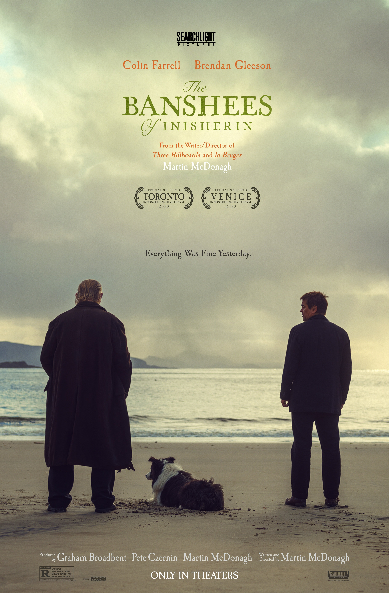

Aftersun
Tina Cai
Aftersun is about memory—or more precisely, the act of remembering. From the perspective of a young woman looking back on her childhood, the movie renders the sensory details of a father–daughter vacation in the 1980s with painstaking specificity; pulsing beneath is a constant search for answers. What was real? Where were the signs? And how did they lead us here?
KC Esper
South Korea’s movie and television game is incredibly strong, and more projects have gained deserved notoriety over the past few years (I’m looking at you, Squid Game and Parasite). Decision to Leave is just another example of ingenuity from South Korea. Directed by Park Chan-wook—who is known for dark masterpieces like Oldboy and The Handmaiden—the movie is a journey from start to finish, encapsulating complex feelings of lust, grief, tenderness, and despair all while keeping you on the edge of your seat. The film was both beautifully made and crushingly complicated, which is what I want in every piece of media or literature I consume. It’s a literal cliff-hanger, and it’s worth a watch.
Enola
Holmes 2
Jen Thiele
Mystery, suspense, adventure, love—you get it all in the Enola Holmes sequel! While ill one weekend, I finally watched the latest installments in the Sherlock Holmes universe. In both movies, the focus is on his younger sister, played by Stranger Things’s Millie Bobby Brown, with Helena Bonham Carter as the Holmes matriarch. While breaking the fourth wall in jest, Enola Holmes 2 is entertaining and tackles perceptions of gender. I also have to mention that the movie was produced by Millie Bobby Brown and her sister Paige. I highly recommend it if you are looking for a little fun and a break from run-of-the-mill mystery thrillers.
The Banshees
of Inisherin
Justin Durkin
Martin McDonagh’s The Banshees of Inisherin is a surprisingly dark, yet equally hilarious, Irish comedy starring Colin Farrell and Brendan Gleeson. At its core, the movie is about a man changing his life and the consequences of doing so, including how it affects people indirectly. It is quiet yet moving, and I’m still thinking about the scenery and music, which transported me to the fictional island off the coast of Ireland. And as a person from an Irish family, the idea of pushing down negative emotions resonated with me. “Fecking hell!”
Elvis
Annie Hanigan
Before watching this movie, I knew very about little about Elvis’s personal and professional life. This movie opened my eyes not only to that but also to the music industry and how things can go wrong behind the scenes. Elvis had a lot of people in his life that only cared about getting fame and fortune by being associated with him, which ultimately led to his downfall. I felt and learned a lot—both signs of a great movie!


Back to top
Justin
designer

At the end of last year, I reviewed the 10 best movies of 2021. At that time, theaters were finally reopening, and people were just starting to brave them. A year later, the moviegoing experience is almost back in full force.
So many great movies have been released this year. But because my wife and I welcomed our first child at the end of last year—not to mention we moved and tackled some home renovations this year—I haven’t seen as many of them as I’d like. Luckily, we have a lot of movie lovers at Leff. Below, some of my colleagues and I share our favorite movies of the year.
Everything
Everywhere
All at Once
Juan Sosa
This movie is truly everywhere and has everything: comedy, romance, action, and suspense—all paired with killer visuals. Comedy is consistently used to break down the walls of heavy topics such as generational trauma and regret in a way that anyone can understand and process.

The
Northman
David Peak
I love cosmic sword-and-sorcery weirdness, and Robert Eggers’s movie The Northman more than delivers. Based on the legend of Amleth, which was the inspiration for Shakespeare’s Hamlet, The Northman strikes just the right balance between brutal, trippy, and tragic.

Prey
Caty Mick
Prey is a surprisingly great addition to the Predator film series with a clever and simple premise: in the eighteenth century, a young Comanche woman must protect her tribe from an invisible terror.
See How
They Run
Ross Middleton
A well-paced whodunit that came and went with little fanfare, See How They Run deserves more praise. It’s light, fun, and self-aware, and though the movie boasts a strong ensemble cast, it’s Saoirse Ronan’s picture: she sets the tone in a film that’s suitable for all audiences but ideal for fans of mystery or farce. See How They Run charms with lush sets, a smart structure, and twists befitting the Agatha Christie source material. Put on some tea and enjoy this one on a rainy afternoon.

Top Gun:
Maverick
Jennifer Bulat
I was 16 when Top Gun premiered. I saw it in the theater twice, as I did with Maverick. On my first viewing of the latter, as the percussion began with the swirl of stars around the Paramount logo, I teared up. This is what happens when nostalgia meets a perfect summer movie. If only every sequel could be this good.

Decision
to Leave